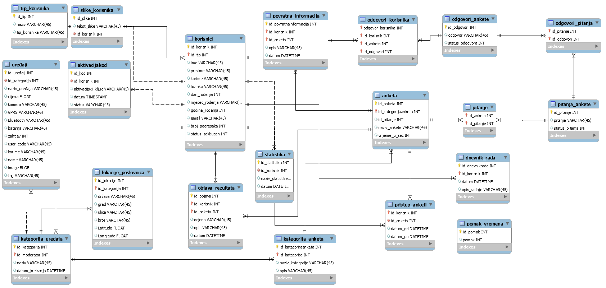

POČETNA STRANICA
MOBILNI UREĐAJI
REGISTRACIJA
PRIJAVA
POPIS KORISNIKA .htaccess
DOKUMENTACIJA
O AUTORU
Dokumentacija
Opis projektnog zadatka
Cilj projektnog zadatka je bila realizacija pretrage i usporedbe mobilnih uređaja. Projekt sadržava četiri uloge: Neregistrirani korisnik, Registrirani korisnik, Moderator i Administrator.Svaka uloga ima određene upute koje su zamišljene na način kao i svaka web-stranica sa kojom se možemo susresti. Najprije je uloga neregistriranog korisnika koji ima mogućnost registracije te se nakon uspješno izvršene registracije može prijaviti(login). Time postaje registrirani korisnik koji može odabrati, ispuniti i vidjeti povratnu informaciju ankete.Također registrirani korisnik ima mogućnost dodavanja mobilnog uređaja u neku kategoriju, te za svaki mobilni uređaj može kliknuti na sviđa mi se(like). Prilikom dodavanja mobilnog uređaja dolazimo do uloge moderatora čija je uloga da potvrdi ili odbije isti zahtjev. Definiranje anketa, povratne informacije, aplikativna statistika te objava rezultata su isto uloge moderatora bez koje neregistrirani korisnik ne bi imao smisla. Najvažnija uloga je uloga administratora koji zapravo može kreirati kategorije uređaja, dodjeliti njima moderatore. Svakoj kategoriji uređaja potrebno je dodjeliti lokaciju, te za svaki upit koji se izvršava nad bazom podataka može vidjeti statistiku isto kao i za posjećenosti stranice. Administrator također ima pristup CRUD-u odnosno create, update i delete nad svim podacima u bazi podataka.
Opis projektnog rješenja
Nakon dugog rada na projektu odprilike tri tjedna nažalost nisam uspio implementirati rad sa anketama. Što znači da nije u potpunosti kreirana uloga moderatora. Ostale uloge, funkcionalnosti su ostvarene te sam sve radio ručno osim upita nad tablicom(pretraživanje sa straničenjem,sortiranje kolona i slično). Umjesto tih upita koristio sam datatable koje mi je uveliko ulakšao posao. Također nisam napravio CSV datoteku sa kojem se nisam susreo do sada i nisam imao vremena isto implementirati. Moja procjena izvršenosti projekta je oko 85-90%.
ERA Model

Navigacijski dijagram
Popis i opis skripata
Popis PHP-a
index.php - početna stranica koja vrijedi za sve uloge korisnika. Na njoj je google-karta sa lokacijama poslovnica(u zadatku je bilo zadano da samo registrirani korisnik ima pristup tome, ali je meni bilo ovako lijepše :D ).
mobiteli_i_kategorija.php - ovoj stranici ima pristup neregistrirani korisnik koji ima mogućnost vidjeti sve mobitele za određene kategorije, ja nisam namjerno implementirao odabir anketa pa na temelju anketa uređaje zbog toga što nemam mnogo uređaja u bazi podataka pa mi je bilo bolje da ostavim samo sve uređaje.
registracija.php - u ovom .php-u se korisnik može registrirati. Punođen je obrazac koji neregistrirani korisnik može ispuniti. Također na toj skripti je implementiran javascript(matkantoc_jquery.js) koji nam služi za provjeru praznih polja, određenih uvjeta za upis podataka te osim validacije na korisničkoj strani postoji i validacija na strani poslužitelja. Uspješnom ispunom obrasca, obrazac se šalje pomoću gumba(submit) te se na email dobije poveznica(link) za aktivaciju iste. Uspješnom aktivacjom korisnik se može prijaviti(login).
prijava.php - preko ovog .php-a korisnik se može ulogirati ako je korisnički račun aktiviran. U suprotnom korisnik se ne može ulogirati. Nakon tri ne uspješne prijave korisnički račun se zaključa te se korisnik više nemože prijaviti u sustav. Na prijavi postoji link zaboravljena lozinka pri ćemu korisnik upisuje svoju email adresu te dobije novu lozinku na istu. Uspješnom prijavom ovisno da li je korisnik uključio/isključio zapamti me pamti se cookie ili sesija. Te uspješnom odjavom cookie ili sesija se briše i korisnik je uspješno odjavljen.
aktivacija.php - ovak .php se otvara na način da se nakon uspješne registracije na mail pošalje link za aktivaciju. Te pritiskom na taj link korisnik je aktiviran, ali ako u određeno vrijeme korisnik ne pritisne link, link će isteći te korisnički račun više ne može biti aktiviran.
ankete.php - u ovoj datoteci nema ništa jer nisam uspio implementirati
baza.class.php - ovo je .php pomoću koje se mogu spajati na bazu podataka, vršiti upite nad istom i slično. Ova skripta je bila jedna od bitnijih skripata u projektu jer sam je koristio skoro na svakom php-u.
baza_update.php - pomoću ovog .php-a sam poprimio sve podatke za korisnike iz baze podataka te sam preko nje napravio .json format koji mi je koristio za popis korisnika preko id-a i imena korisnika za select naredbu kako bi neki korisnik mogao odabrati korisnika nad kojim želi vršiti promjenu.
baza_update1.php - .php mi je služilo za odabir samo jednog retka u tablici korisnici gdje je id_korisnik jednak id_korisniku kojeg smo odabrali pomoću ajaxa i skripte baza_update.php. Na temelju ove skripte mogao sam vršiti uspješno update u CRUD-u.
crud.php - .php koji mi je služio za update, insert i delete iz tablice Korisnici.
dnevnik_rada.php - na ovom .php-u je implementiran dnevnik rada za prijavu korisnika, zahtjev za dodavanje uređaja, upload slika i slično.
dodaj_uređaj.php - korisnik ima mogućnost dodjele uređaja, odnosno slanje zahtjeva za dodavanje uređaja pri čemu moderator to može odobriti.
galerija_slika.php - korisnik može preko gumba ASC ili DESC prema tag-u od slika sortirati slike te ih vidjeti kao galeriju.
index_admin.php - to je zapravo .php koja nam prikazuje tablice nad kojem je korišten datatable, i postoje dva gumba koja služe za aktivaciju ili blokiranje korisničkog računa. Koristi se .js datoteka preko koje administrator može odabrati određenog registriranog korisnika za iste promjene.
kreiraj_dnevnik.php - .php služi za dohvaćanje podataka iz baze podataka koja mi koristi u .js-u, točnije u ajaxu za izradu tablice za dnevnik rada.
kreiraj_kategoriju.php - služi za kreiranje kategorije uređaja, kreiranje kategorija anketa te dodavanje lokacije.
kreiraj_tablicu.php - pomocu ovog .php-a dohvaćam sve korisnike iz tablice korisnici u pazi podataka i preko ajaxa radim tablicu na temelju podataka.
login.php - .php se sastoji od provjere sesije i cookie-a i na temelju id_tip-a korisnika vraća vrijednost o kojem korisniku se radi.
lokacija_baza.php - vraća id i naziv kategorije uređaja koja nam služi za odabir iste u drugim skriptama.
lokacija_baze.php - vraća nam podatke iz lokacije poslovnica koja nam služi za google kartu za postavljanje istih na google kartu.
moderator_baza.php - vraća nam podatke u moderatorima iz baze podataka iz tablice korisnici te ju koristimo u .js-u za odabir moderatora.
navigacija.php - u njoj se nalazi sva navigacija ovisno o tipu korisnika koji je prijavljen ili nije prijavljen.
o_autoru.php - sastoji se od slike mene, koji sam izradio ovaj projekt i podatke o mojem indexu.
odbij_zahtjev.php - pomocu ovog .php-a moderator odbija zahtjev za dodavanje uređaja od strane registriranog korisnika.
odbijeni_uređaji.php - u ovom .php-u registrirani korisnik može vidjete odbijene uređaje koje je odbio moderator.
odjava.php - kod uspješne odjave pomoću ovog .php-a se brise cookie ili sesija. Odnosno cookie se postavlja na pocetno vrijeme 0, što nam omogućava uvid u brisanje.
odkljucaj_zakljucaj_baza.php - pomoću ovog .php-a vraćamo korisnike čiji je korisnički račun zaključan.
pomakvremena.php - .php. koji nam omogućava pomak vremena preko .json-a te se pomak upisuje preko gumba u bazu podataka.
pomak_funkcija.php - pomoću ovog .php-a vraćamo vrijednost funkcije, koja nam zapravo vraća na temelju pomaka i trenutnog vremena virtualno vrijeme.
prihvati_uredaj.php - .php pomoću koje moderator može pritiskom na link u mailu prihvaća zahtjev da dodjelom novog uređaja u kategoriju.
provjera_korime.php - vraca broj redova, odnosno da li korisnik postoji u bazi ili ne na temelju ajaxa.
random_generator.php - .php koj nam omogućava generiranje random šifra u slučaju zaboravljene lozinke korisnika.
resetiraj_lozinku.php - omogucava nam upis email-a za zaboravljenu lozinku te provjerava dal se email nalazi u bazi ili ne, te nas prosljeđuje na sljedeću skriptu.
resetiraj_lozinku2.php - bili smo na nju preusmjereni preko resetiraj_lozinku.php te se na naš email šalje nova šifra sa kojom možemo pristupiti u sustav i preusmjeruje nas na prijava.php.
slike_odaberi.php - tamo gdje je zahtjev 1 iz baze uređaji vrati nam sve podatke o uređaji te nam služi za ispis svih podataka o uređajima.
statistika_broji.php - broji nam podatke o nazivima statistike, odnosno o posjećenosti stranica.
statistika_broji1.php - broji nam podatke o upitima nad bazom potrebno za izradu grafova za statistiku.
uredaji.php - možemo vidjeti popis svih prihvaćenih uređaja, te im možemo dodati opis i sliku.
vidi_statistiku.php - koristimo canvas za izradu grafova te prikazujemo statistiku za posjećenost stranica te upitima nad bazom podataka.
zakljucaj_odkljucaj_baza.php - vraćamo sve zaključane korisničke račune.
JavaScript datoteke
googlemaps.js - u ovoj datoteci koristim javascript za implementaciju google karte koja mi je potrebna za prikaz poslovnica mobilnih kategorija.
matkantoc_jquery.js - u ovoj datoteci koristim cijeli javascript koji je potreban za realizaciju ukupnog projekta.
CSS datoteka
mateo_kantoci.css - u datoteci css koristim mateo_kantoci.css za implementaciju dizajna kroz cijeli projekt.
Korištene tehnologije
Navedene tehnologije sam vec spomenuo kroz opis projekta pa necu naknadno opet opisivati:
JavaScript, jQuery, HTML5, CSS3, PHP, AJAX, jQuery UI
Vanjske biblioteke
Google Maps API -
https://maps.googleapis.com/maps/api/js
jQuery UI -
https://code.jquery.com/jquery-1.12.3.js
jQuery AJAX -
https://ajax.googleapis.com/ajax/libs/jqueryui/1.11.4/jquery-ui.min.js
https://ajax.googleapis.com/ajax/libs/jquery/1.11.2/jquery.min.js
https://cdn.datatables.net/s/dt/jq-2.1.4,dt-1.10.10/datatables.min.js
https://cdn.datatables.net/1.10.12/js/jquery.dataTables.min.js
reCAPTCHA -
'https://www.google.com/recaptcha/api.js